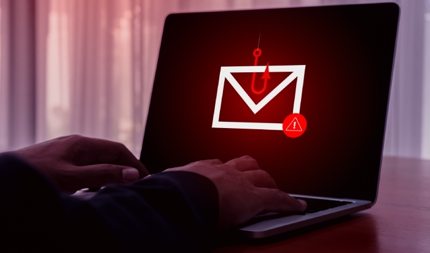
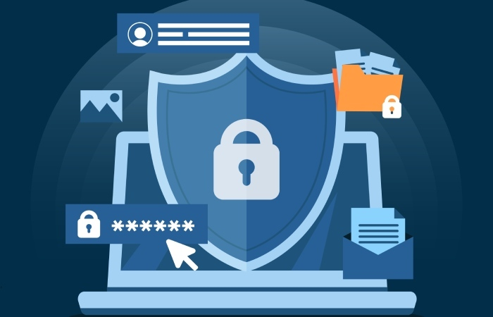

Email phishing is a common cybersecurity threat for businesses and individuals. Cybercriminals use increasingly sophisticated methods to impersonate trusted brands, executives, vendors, and employees. Their goal may be to steal sensitive information, prompt a money transfer, or get someone to click a malicious link.
These messages can be hard to spot. They may copy legitimate branding, mimic familiar writing styles, or appear to continue a real business conversation. Without effective email phishing protection, organizations face risks that include financial losses, compromised accounts, data breaches, and reputational damage.
Preventing phishing takes more than teaching people to recognize suspicious emails. Organizations need layered defenses, including email authentication, advanced filtering, employee awareness, and ongoing monitoring. Understanding how impersonation attacks work—and putting appropriate safeguards in place—can help organizations identify fraudulent messages before they reach employee inboxes.
Email phishing uses deceptive messages to persuade recipients to take actions that benefit the attacker. Impersonation attacks add a layer of deception by posing as someone the recipient already trusts.
An attacker might, for example, pose as a company executive and request an urgent payment, or impersonate a software provider and direct an employee to reset a password on a fraudulent website.

Recognizing these patterns can help organizations build stronger email security policies. Discover more by clicking here.
Early detection depends on both technical controls and employee awareness. These steps can help identify suspicious messages.
Look closely at the sender’s address. Attackers may use addresses that resemble legitimate business domains but differ by a small spelling change.
Email headers can provide additional details about a message’s origin, delivery path, and authentication results. Security teams can review SPF, DKIM, and DMARC results to see whether the message passes authentication checks.
Phishing emails may include links to fake login pages or websites that host malware. Avoid clicking unexpected links, and check website addresses before entering credentials.
Treat unexpected attachments with care, especially executable files and unfamiliar documents that ask you to enable macros.
Impersonation attacks often use urgency or authority to prompt quick action. Requests for immediate payments, password changes, gift cards, or confidential documents should be verified independently.
For unusual financial requests, confirm them through a separate communication channel instead of replying to the email.
Email authentication helps identify unauthorized senders and reduce domain spoofing. SPF, DKIM, and DMARC serve different purposes and work together to strengthen email security.
Sender Policy Framework (SPF) lets domain owners specify which mail servers are authorized to send email on their behalf. Receiving servers can compare the sender’s IP address with the domain’s published SPF record.
A properly configured SPF record helps prevent unauthorized servers from successfully sending messages using a protected domain. SPF alone, however, cannot prevent every impersonation attack.
DomainKeys Identified Mail (DKIM) adds a digital signature to outgoing messages. Receiving servers use the public key published by the sender’s domain to verify that signature.
This helps confirm that the message was authorized by the signing domain and that signed portions of the email were not altered during transmission.

Domain-based Message Authentication, Reporting, and Conformance (DMARC) builds on SPF and DKIM. It checks domain alignment and lets domain owners set policies for messages that fail authentication.
Organizations can introduce DMARC policies gradually:
DMARC reports can also help administrators identify unauthorized sending sources and authentication issues.